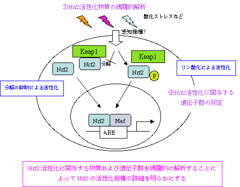

ホーム > 研究内容 > 親電子性物質応答に関わる分子の網羅的解析
研究内容
親電子性物質応答に関わる分子の網羅的解析
転写因子Nrf2は生体内異物や酸化ストレスに応答し、抗酸化応答配列（ARE）を介して一群の遺伝子発現を制御して生体防御に働いています。親電子性物質および酸化ストレスによりNrf2が活性化するには、細胞質におけるKeap1による抑制から開放されることが必要ですが、このKeap1の抑制から解除される経路や酸化ストレスの感知機構に関してはまだよく分かっていません。現在、Nrf2の活性化機構はプロテオソーム系を介したKeap1によるNrf2分解の抑制やNrf2のリン酸化などが考えられていますが、統一的な見解は得られていません。また、Nrf2による統一的な遺伝子発現活性化機構についても多くのことが不明です。そこで，Nrf2を介した親電子性物質応答に関わる遺伝子群またはNrf2を活性化する物質を網羅的に解析することによって、Nrf2の活性化機構の詳細を明らかにしようと研究をすすめています。
